General Information
This branded website is publicly available at grittynl.github.io/gritty/
This website was created by:
- Urte Jonaviciute (ID: 231077)
- Tereza Bugarova (ID: 235491)
- Fenne van den Oever (ID: 230798)
- Guus de Beer (ID: 235045)
Content
Brand Name & Logo
We decided to call our back brace brand Gritty since it perfectly captures the distinct personality of dachshunds. Despite their diminutive stature, dachshunds are courageous, tenacious, full of attitude; they face challenges head-on and never back down. This is the attitude that we want to capture in our brand. This type of perseverance is frequently referred to as “grit”- the ability to persevere in the face of adversity by combining courage, passion, and resilience. Grit is defined as bravery and courage
We started by thinking of what could make the logo define the brand. We all came to a consensus that we wanted some kind of resemblance of a dachshund. We also thought about adding an element to represent care which led us to trying out adding hands or hearts. Here are our first sketches:
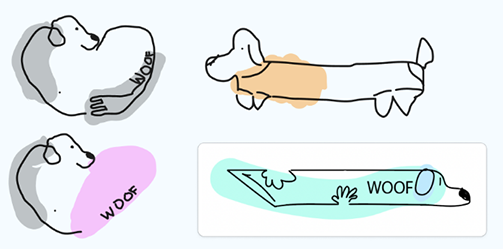After solidifying our final colour palette based on our marketing research, we went on to develop better quality drafts of our logo. We decided to keep going with the heart-shaped logo as we felt it was the most unique and represented our values best.
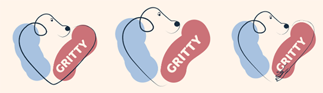We also wanted to use a brand mark for smaller applications (apps, garments etc):
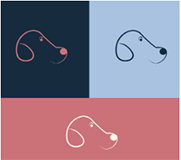After some feedback from the team, we decided to choose the first version of the primary logo but make the colour swatches smoother since the texture seemed like a mistake.Here are the final versions of the logo, secondary logo and brand mark:
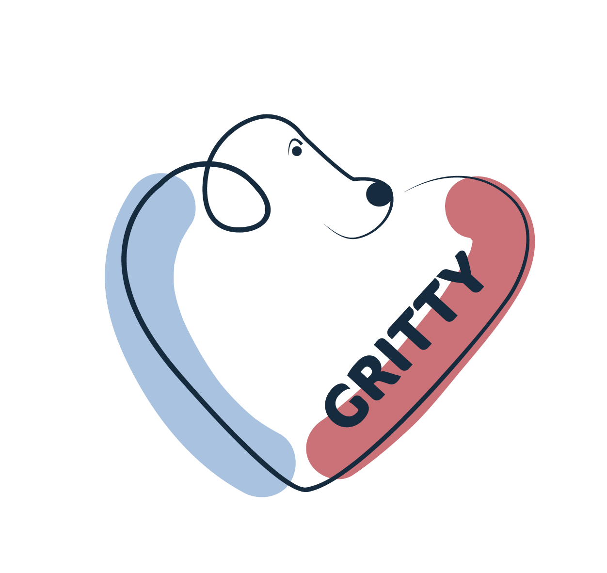Vision
In a world where dachshunds are part of families, we believe this caring goes beyond the basic necessities like taking a walk, serving food and petting. In a perfect world everyone can give back the unconditional love they receive from their dog.
Mission
Through thoughtful design and lively expression, we aim to provide a solution for your devoted friend.
Values
Please clarify here the match between students and pieces of content. Make sure that you provide a link to the correct page within the website
| # | Student ID | Value | Name and link of content |
|---|---|---|---|
| 1. | 231077 | Trusted Support | Value: trusted support |
| 2. | 235491 | Lively Expression | Value: lively expression |
| 3. | 230798 | Proactive Care | Value: proactive care |
| 4. | 235045 | Devoted Friendship | Value: devoted friendship |
Visual Identity
Colours: We essentially chose the colours blue and orange. Blue stands for reliability and high quality and orange for excitement. After evaluating our target group and marketing tactics we were turning more towards female preference that is why we changed orange to pink. This enlightens the more feminine side. We used the split complementary theory because of the contrast that creates a boldness that separates us from competitors.
Colour palette:
Stylesheet:

Typography:
Supporting visuals:
The visuals of Gritty are designed to embody the brand. High-end lifestyle photography showcases the back brace in real, everyday situations with dachshunds. Graphics aren't about looks alone, they're a story of devoted friendship and thoughtful craftsmanship, inviting the viewer to an emotional relationship with the product.
Production
Design Elements
Color scheme
We have chosen the colours dark blue, baby blue, cream and pink.
-
#162b3e
#a8c2e0
Out of our research we indentified a strong pattern that most women are atracted to the colour blue in marketing and branding, as we are targeting women mostly this inside guided our decision for chosing blue. Due to color psychology blue stands for trust, strength and dependable (DatasetDB, 2018). These qualities directly reflect our brand; we are a reliable, high-quality brand designed with love and care. The combination of dark and baby blue adds both confidence and softness, balancing professionalism with emotional warmth.
-
#fff4ea
Cream is a calming, neutral color that was picked to give the brand a gentle, warm and friendly look. As a background color, it improves the blue and pink accents' visibility and provides the brand and website a welcoming, clean, and trusted vibe that is similar to our brand tone.
-
#cb7278
Due to color psychology, the pink/magneta color stands for passion, innovation, and balance (Lischer & Lischer, 2024). We decided to make our colour a bit more warm and nude to stay elegance and grounded. These values align with our brand’s mission to provide preventative care with a personal touch. The warmth of the nude pink brings a sense of love, care, and emotional connection.
Font choices
We chose rounded and playful fonts which are easy to read, because it reflects our brand personality. Rounded fonts feel warm, friendly and approachable (Adobe Express, n.d.). At the same time, we prioritized readability. Especially for reading product information. A clean and easy-to-read font ensures that customers can quickly understand what we offer, which helps building trust and improve the overall user experience.
User interface elements
Our website uses a clear and structured grid layout to present information as organized as possible. We are trying to improve readability and user experience. We want customers to easily scan content and understand the product we are offering and its features. This fits our target audience of online shoppers because of the clarity and structure. The grid layout helps highlight key elements of our brand without overwhelming the users with too much information at once.
On our homepage we added a carousel to show the users our product and its features in a fast and simple way. The interactive element keeps the website dynamic and engaging. The carousel could also be used to show our seasonal designs or for user testimonials. Using a carousel allows the brand to visually tell the story of our product and it could gain emotional appeal of our product.
We have chosen responsive navigation, which is also called a hamburger menu. This is a clean minimalistic choice. It keeps key navigation items easy and accessible. Our audience is found on social media and shops online, a lot of other online stores also use this navigation way, meaning our audience is used to this pattern. It keeps our website mobile-friendly, modern and easy to use.
We tried to make the customer journey as smooth as possible by keeping the website easy. We used a call-to-action button for a consultation, and we made it a different color to let it stand out. The users could easily jump to key sections on our website with our menu. The customers want to find product details or testimonials easy and quickly before they purchase our items.
All our elements used on the website contribute to an emotionally engaging, clear, and easy shop experience.
Navigation & content
Our website uses a user-friendly structure that tries to support a smooth customer journey. Starting with our homepage as a central entry point. The homepage is a landing hub. We used a hero section, which is a large visual and a short message, to immediately introduce our brand and its product value. We try visually engaging and give an emotional driven first impression to connect with the audience. It grabs attention fast, also for mobile users. We try to influence the best first impression bias by adding a hero section when landing on our website.
For navigating true the website, we used a simple navigation menu on the side. It is accessible on all pages, and it includes the key pages which are: home, our services, about us, corporate, and a call to action for our consultation form. We wanted to implement recognition over recall, meaning the users do not have to remember where things are. They can find it easily on the menu.
Our homepage combines the emotional appeal of branding true storytelling in our carousel and images, with adding functional value by telling what our product does or prevents in our case. Our services page focusses on the product with telling the benefits and by adding visuals. The about us page builds brand credibility by emphasizing our personal connection as dog and dachshund owners. The contact/call to action button and page offers reassurance and access by giving the opportunity to contact us. It's important for new brands, like us, to enhance trust in our brand. The mobile website tries to ensure F-pattern scanning behavior, meaning that the most important content is always seen first.
Credits
All images used on the website were generated using AI tools - Gemini and ChatGPT.
Testing Report
Test Protocol
The goals of the user testing are:
- To search for errors and problems that users experience
- To evaluate the usability, user friendliness, design choices, and navigation
- To evaluate the brand and product concept clarity
- To evaluate if the website is appealing to our target audience
- To evaluate if the website communicates our values
- To get feedback from them in order to ensure an improved, well-functioning version of the website that fulfils its communication purpose
Test participants:
Each of us is going to test the website with at least two participants from our target group. They will be between the ages of 20-30 years old, male and female (our primary and secondary target).See details of the target audience below:
- Geographics: The Netherlands
- Demograhic: Smaller and younger families with higher income and education, geared towards women
- Behavioral: They purchase online and spending is not affected by the economic state (Gupta, 2025), low loyalty status because they follow trends. They use social media mostly for entertaining content. They use TikTok and Instagram most of the time for entertainment and Facebook for community groups.
- Psychographics: More active lifestyle, they value quality, companionship, fun and health, and social interaction
Key research question:
Is the website user-friendly, easy to navigate, is the brand and product concept clear to the users, is the website appealing, and does it communicate our values?
Test setting:
The testings are going to be conducted in person on phones, tablets, and laptops, to ensure that the website responds well to all devices. Some of them will be in person on campus, some will be held online. We are going to start with a brief introduction of our brand and explain how the testing is going to be conducted. The users will be given tasks and observed, but they will not be given instructions, and there will be no interference unless help is needed. The testing will be recorded for later research purposes upon agreement from all parties involved.
The context:
You are a dachshund owner who is struggling and in search of a functional, yet stylish and customizable back brace for your dog. You love and care for your dachshund, and you want to do all in your power to help prevent spinal complications that tend to arise later in their lives due to the unique shape of their bodies. You don’t only care deeply about high quality, but also about fashion and style. You want your dog to look stylish all year round. You found Gritty, and you're contemplating whether this brand is trustworthy and worth investing in.
Tasks to complete:
- Find our product and its features.
- Try to make a consultation for a back brace.
- Find the customer testimonials.
- Can you find our vision and mission statement?
- Find the team behind Gritty
- Find our social media links and try following us on Instagram.
After completing all the tasks listed, we will ask them for feedback, identify their pain and improvement points.
- Was the website easy to navigate?
- Was the website user-friendly and easy to use?
- Was anything confusing?
- Was there anything especially frustrating?
- How did you feel while going through the different pages?
- Did you understand what the product is?
- How was your experience with filling in the consultation form?
- Was the messaging clear?
- Was anything unclear?
- What did you think of the supporting images and logos?
- Is the font easy to read?
- How do you feel about the color combinations?
- Did you see anything that made you feel happy?
- Would you trust this brand?
- Did you particularly like or dislike anything?
- Would you add/remove anything?
- Do you have any suggestions for improvement?
- Would you recommend this website to somebody else?
- Would you use it yourself?
Test findings:
All users expressed that the navigation and usability were clear, smooth, easy, relaxed, and intuitive. One user appreciated the headings for navigation and division of the page, while others would like to see drop-down menus (for our services, about us…) or more pages listed in the navigation bar. They experienced difficulties while finding the product, the testimonials, the vision, and the mission. A user expressed that she would like to see a more personal touch in the contact form.
The users understood what the product was, but they would like to see pricing, more product features, visuals, or reviews.
Users found the content and messaging clear, concise, and easy to understand. They generally liked the color scheme, logo, fonts, and the visuals of dogs – they were perceived as warm, trustworthy, and clean. However, the pictures and text were misaligned on the mobile version. The text was too close to the visuals, and the pictures were cropped or cut off.
All users found the brand professional and trustworthy, especially due to the contact option and social media links. The Instagram and TikTok links worked well, but they would place them on the footer of every page, not just on About Us. They would use it themselves and recommend it to others.
Suggested improvements
- Fix the issues with the mobile version – misalignment of pictures and text, and cropped and cut off images
- Create more individual pages or drop-down menus for parts such as product features, customer testimonials and reviews, mission, vision, and the team behind Gritty
- Add more product information – visuals, features
- Add pricing information
- Make the contact form more personal and make the button stick (not move while scrolling) in the right corner of all pages
- Add social media links to the footer of all pages
Improvements that have been applied:
- Images on the mobile version are no longer cut off
- The contact form has been adapted to be more personal
- Social media links have been added to all pages
The remaining suggested improvements haven’t been implemented because they have been too complex to adjust until the deadline.
Marketing
Context of campaign and promotional activities
The campaign is for promoting a pet product brand – Gritty, specifically designed for teckels (dachshunds), with a primary focus on enhancing pet well-being while integrating elements of fashion and functionality. The campaign is tailored to appeal to younger, higher-income families in the Netherlands, particularly women who lead active lifestyles and value quality, companionship and well-being in their lives. This group was chosen because of emerging demographic and behavioural trends in pet ownership, particularly among Millennials and Gen Z.
The promotional activities for this campaign were executed through a one-month content calendar focused on storytelling, education, and audience engagement. The content was distributed across TikTok and Instagram—the most relevant platforms for the target audience, as both are primarily used by people under 35 years old for entertaining and lifestyle content (Duarte, 2025; Statista, 2024). These platforms were chosen based on media consumption data, visual-centric design and the strategy was supported by specific post timing to maximize engagement (Sharma, 2025; Suresh, 2025).
The campaign objectives, as defined in the Communication & Media Plan, were structured using the SMART method. The reach objective was to achieve 2,000 views per TikTok video within 1 month, based on Statista's (2024) data showing small accounts can average around 2,665 views. The effect objective aimed to create a sense of “stylish care,” reflecting the brand’s identity and values. The response objective was to reach a 5% engagement rate on TikTok and Instagram within 1 month, aligned with industry standards for small accounts (Smith, 2025).
Introductory content like “Get to know Gritty” and “What does Gritty mean?” published on Instagram helped establish the brand’s identity and emotional tone, supporting the affect objective by creating a sense of stylish care and connection. Educational TikToks such as “3 signs your dachshund may have back problems” and “What back pain looks like in dachshunds” positioned the brand as a trusted source and increased reach through relevant content for the audience (Langellotti, 2024). Interactive posts, such as Instagram story polls, encouraged customer participation helping reach the response objective by boosting engagement rates (Melkko, 2018). Testimonials and user reviews helped with building authenticity, social proof and trust with the target audience that values real, relatable experiences (Scout, n.d.)
These promotional tactics were chosen to build trust in the brand, while also humanizing pet ownership through emotional storytelling, trends such as #dogmom and #furbabies and shared values of well-being and companionship (Willis, 2023).
Learning Points
Objectives:
What did we learn?
Shorter videos seem to work better. From looking to our analytics we noticed most viewers have an attention span of about 10 seconds before they swipe to a new video. So that means we need to put the information we want to convey to the viewer within 10 seconds. For us Instagram is most useful to build customer relationship, because of this being the platform where the most conversation is taking place. TikTok is better for creating awareness for our brand since it is easier to reach more people. The best scoring post, engagement wise, on both platforms is the following one - TikTok video. It is a slightly different video as this has a funnier sound/side to it. This could make people liking it more. So, in the future it would be good to look into funny content while remaining loyal to our brand values.
What did we expect?
We now have an engagement percentage of 5.8%. Which is only a difference of 0.1 compared to what we had in mind.
What did we not expect?
We barely noticed any difference between content with and without call to actions. We used CTA's like: "Follow us to get more insights" or invite to react in comments, however nnone of them affected our metrics. We did not come close to the reach objective; we only got an average of 633 views per video on TikTok. This is only 31,5 percent of what we wanted to reach. Although we noticed a slight growth in the last week, where the average was 765 views.
Future Planning
If the project were to continue, we would focus on optimizing and differentiating the content strategy across our social media platforms – TikTok and Instagram, based on what performs better on which one.
On TikTok, short and fast-paced videos performed the best. The carousels had an average of 556 views, longer videos had 665 views, and shorter videos had 746 views. A short video generated 61 likes, which is 3-4 times more than the carousels.
We would continue posting short and long videos to increase brand awareness, but fewer carousels because of their worse performance. We would focus more on showing real faces rather than generic content, due to the users' preference. Some posts would include: day in the life, pet voiceover, educational fact carousel, product features, pet care myth-busting, or a pet dance trend.
TikTok users prefer funny and trendy content. TikTok For Business (2024) states that 30% of their users expressed that humor was a top motivation for purchase intent. Out of categories such as creative, relaxing, inspirational, funny, or informative, funny scores the highest, while informative content scores much lower, being two times less popular in comparison to Instagram (Henderson, 2025). We saw that serious content doesn’t perform as good on TikTok, that’s why we would focus on more funny content and trends. Hopping on TikTok trends works well even for serious brands, such as Ryanair or Duolingo. It generates a lot of views, customer engagement, and establishes a positive brand image. While joining trends, we would adapt them to match our higher-end brand, not to lose our seriousness and credibility.
Based on our findings, Instagram works well for building customer relationships, which aligns with our goals. We would post, for example, a behind-the-scenes story, customer testimonial reel, informational carousel, this or that poll, or a day in the life reel. According to Henderson (2025), funny content ranks the highest on Instagram, while informative content takes the 3rd place, in comparison with TikTok, where it takes the 6th place. Between Instagram and TikTok, Instagram is the platform to post educational content.
Currently, we posted only 5-6 times per week together on both platforms. We would increase this to 1-3 per day on each platform, because that is the ideal posting frequency according to Anderson (2024). Their findings show that posting frequency has a direct influence on visibility and engagement. Before, we used to post at different times on different days. Now, the schedule would be fixed with Instagram posts at 7 AM, 7 PM, and TikTok posts at 9 AM, 9 PM for consistency.
Future Content CalendarProfessionalism
Our campaign timeline started on the 17th of March 2025, and it ended on the 13th of April 2025. We decided to split the timeline into 4 weeks, with every week a different purpose for our posts.
The first week was: awareness and engagement.
Our goal – Introduce the brand Gritty
We focused on introducing who we are, what we stand for, and why our mission matters. Our content included light-hearted, visually engaging posts that showcased our tone of voice: warm, trustworthy, and playful.
Post 1 – Instagram - (March 21st)
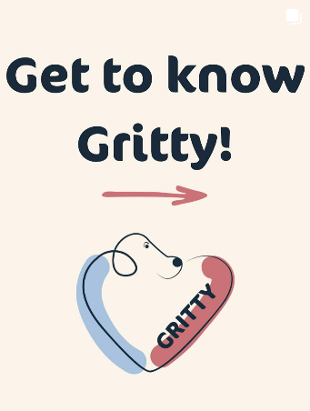In our first post on Instagram, we introduced the brand Gritty. We explained what Gritty meant. We chose to do this in a carousel because that format allowed us to tell a visual story in a few frames.
Post 1 – TikTok – (March 22nd)
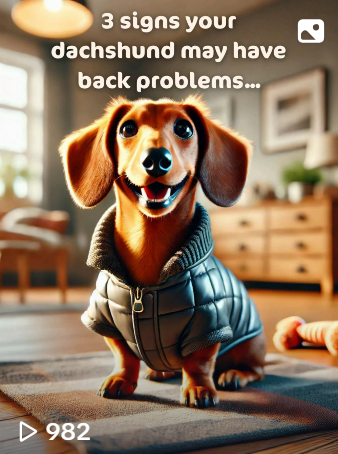In our first TikTok post, we posted ‘3 signs that your dachshund may have back problems.’ In this carrousel, we tried to create awareness around the medical issues that dachshunds experience.
Post 2 – Instagram – (March 22nd)
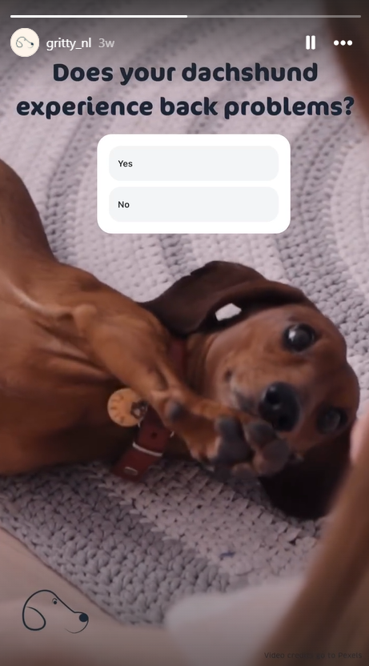No link since it is a story.This Instagram story poll asked the public if their dachshund experienced back problems. It allowed us to interact with the public on a low-barrier, personal way. It created an emotional hook as followers could reflect on their own dachshund’s health and they could recognize the risk.
Post 2 – TikTok – (March 23rd)
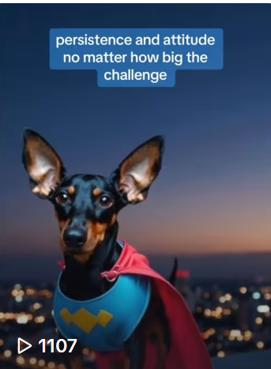We used AI visuals and voiceover to create a stylized, polished introduction video that was unique and scroll-stopping. This choice helped us stand out on TikTok while remaining cost-effective for a small brand. The content explained the meaning behind the name "Gritty", our mission to care for dachshunds proactively, and what makes us different. It reinforced the messaging from our Instagram carousel, while adapting it to TikTok’s algorithmic and visual culture.
The second week was: problem awareness and education.
Our goal - Educate the audience about the health issues dachshunds face and why preventative care matters.
This week focused on highlighting Intervertebral Disc Disease (IVDD) and the lack of suitable solutions in the current market. Posts were more informational, with clear, accessible language that built authority and trust without overwhelming users.
Post 3 – Instagram – (March 25th)
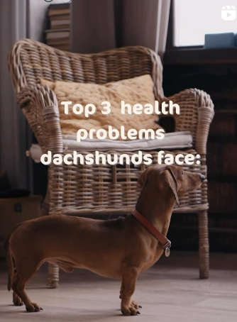Reels are fun and engaging formats on Instagram. This post aimed to inform followers about the most common health issues — especially spinal problems like IVDD — in a fast, engaging, and visual way. It helped position Gritty as a brand that understands real dachshund needs, reinforcing the trust that’s essential for our early adopter audience.
Post 3 – TikTok (March 26th)
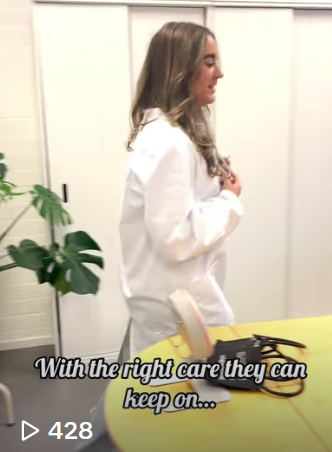Bringing in a veterinary perspective increased our brand credibility and trustworthiness. TikTok is often used for quick education, and this content helped ground our messaging in expert-backed support.
Post 4 – TikTok (March 27th)
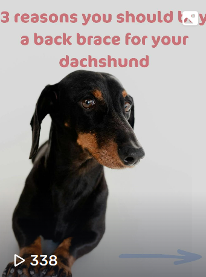This video marked the shift from awareness to consideration. It listed clear product benefits (e.g. prevention, fit, comfort), directly addressing customer pain points.
Post 4 – Instagram (March 27th)
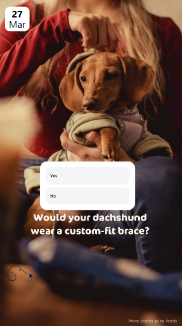No link since it is a story.This was an Instagram story asking if your dachshund would wear a custom-fit brace. This story invited direct interaction and gave us useful market feedback. Polls are low effort for users yet provide strong engagement and insight for us.
Post 5 – Instagram (March 28th)
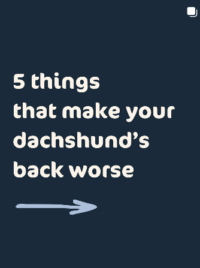These 5 things that make your dachshund’s back worse carousel. This post was meant to educate and emotionally connect. It highlighted common daily actions (e.g. jumping, long walks, stairs) that owners may not realize are harmful — increasing the sense of urgency and need for a preventative product like Gritty.
The third week was: trust building and product benefits.
Goal: Showcase how our back brace solves the problem and why it’s better.
Here, we introduced our product in more detail, highlighting its unique features (custom fit, stylish design, vet collaboration, etc.) and how it integrates with a dachshund’s lifestyle. We shared our story as owners and founders, building personal credibility and emotional connection.
Post 6 – Instagram – (March 31st)
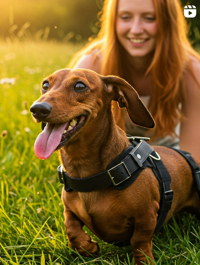This reel officially introduced the product, giving a clear visual overview of the Gritty brace. It focused on the most important USPs: custom fit, supportive design, stylish appeal, and made-for-dachshunds. This post marked a shift toward consideration in the buyer journey and served as the foundation for the trust-building phase.
Post 7 – Instagram – (April 2nd)
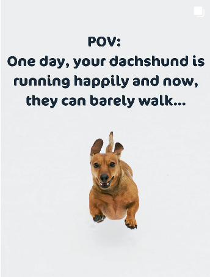Why dachshunds are prone to IDVV, and how to prevent it. This carousel provided more in-depth educational context, while naturally leading into the solution: our brace. It tied together the health problem and our product benefit, reinforcing why Gritty exists. It added depth to the trust-building narrative, making followers feel informed and empowered.
Post 5 – TikTok – (April 2nd)
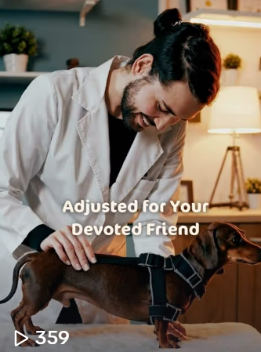A specialized craftmanship video. We highlighted the care and detail in the making of each brace, showing how it's designed specifically for the dachshund's shape and lifestyle. It helped create a sense of premium quality and authenticity, essential for building trust.
Post 8 – Instagram – (April 3rd)
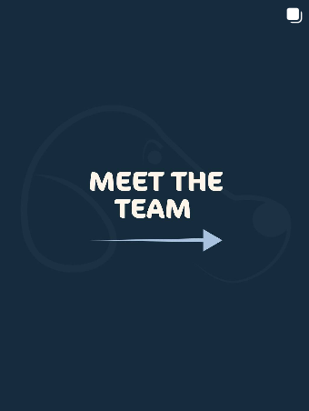Meet the team. This post showed the real people behind Gritty, emphasizing that we’re dog owners ourselves. By putting faces to the brand, we built emotional credibility, trust, and relatability.
Post 9 – Instagram – (April 4th)
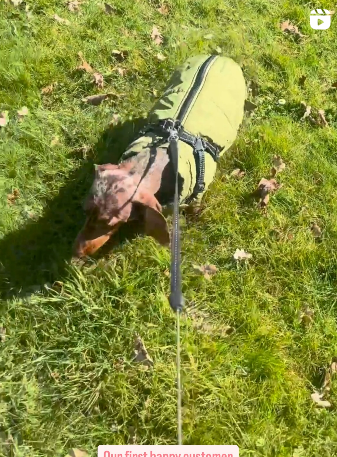Reel of coming along for a walk with proud customer. This post acted as social proof — it showed a real dachshund using the brace in daily life. It’s trust-building content because it demonstrates real satisfaction from a customer, which could create confidence in our product.
Post 6 – TikTok – (April 4th)
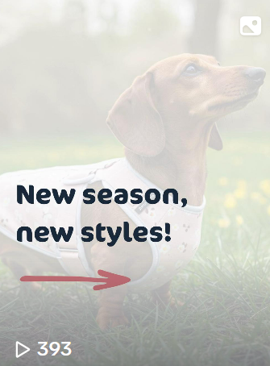Carousel with showing our seasonal adaptions. This post highlighted the customizable and stylish aspect of our product. It aligned with the brand value of lively expression and added emotional and visual appeal, showing that we don’t just offer function, but joy and personality too.
The fourth week was: call to action and social proof.
Goal: Motivate action and reinforce trust through real feedback.
This final campaign week focused on converting awareness and trust into action. We used testimonials, product visuals, and emotional storytelling to show that real customers love and trust Gritty.
Post 10 – Instagram – (April 7th)
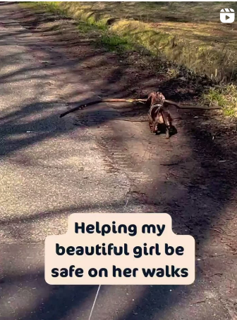Video of a walking dachshund with a big stick and saying it helping her beautiful girl be save. This post is combining real customer emotion with visible product use. The post appealed to the emotional side of our audience, especially women who see their dog as a family member, pushing them toward final purchase decision.
Post 7 – TikTok – (April 9th)
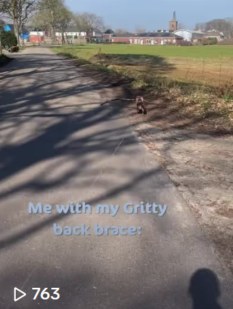Video of a walking dachshund with a big stick using a trending comedic sound "Go Kylie go". This is where we tried out following trends to see how our metrics were effected by it.The video shows real customers using the product making it seem more trustworthy.
Post 8 – TikTok – (April 10th)
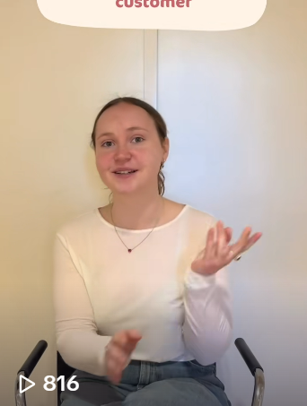Customer testimonial explaining how happy she is with the back brace for her dog. This format is direct, honest, and trustworthy, delivering a raw customer perspective. We used this to increase social proof.
Post 11 – Instagram – (April 11th)
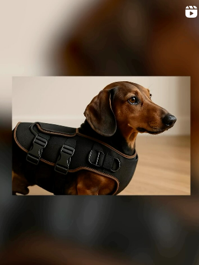This is the same customer testimonial but with added b-roll. This version with visual storytelling and product context, make it more engaging for Instagram users.
Post 12 – Instagram – (April 13th)
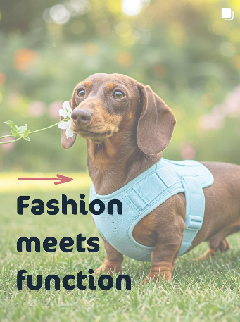Carousel showing options of different back braces. This post is encouraging users to imagine their own dog in the brace. It motivates the desire for customization and personality, which was a big desire based on our interviews. It also includes a call to action to check out our website.
Post 13 – Instagram – (April 13th)
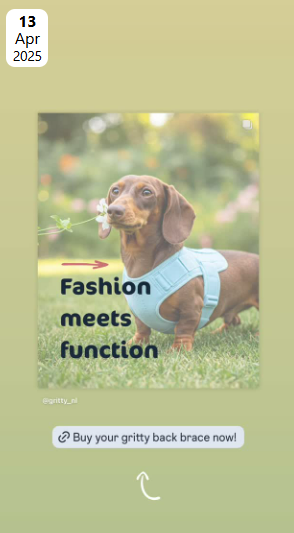No link since it is a story.A story with a link to tour website encouraging to check out the back brace. This accompanied the post on the profile.
Management
Lean Canvas
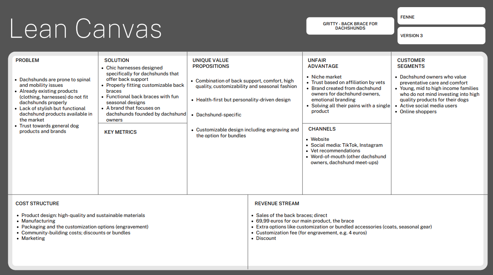Problem
- The back braces do not fit the dogs
- The braces offered are purely functional and very basic designs. If the braces are stylish, they are not functional for back problems.
- Generic dog brands do not offer many dachshund-focused products
Currently, there are solutions to all these separate problems, but there isn’t a product that solves them all. Dachshund owners can buy dachshund-specific clothing, but even then, the fit isn’t guaranteed. Most back braces on the market serve solely a functional purpose and don’t have a special style. If dachshund owners don’t trust general pet stores, they can turn to dachshund-specific ones.
Solution
- We offer a single product that solves all these problems in one go. Our chic harnesses are designed specifically for dachshunds. They are properly fitting as well as customizable, so pet owners don’t have to go through all the struggle with finding a properly fitting one. Our back braces are functional as well as stylish, with fun seasonal designs. We are a brand made by dachshund owners for dachshund owners.
Customer segments
- Our target is dachshund owners who value preventative care and comfort. They are aware of the health issues their dogs face and how expensive repair surgeries can be. Even though they are young (20-30), they can afford to invest in premium high-quality products for their dogs. They are primarily female active social media users and shop online. According to the Diffusion of Innovation Theory, our customers are somewhere between early adopters and the early majority. They like to try new problem-solving products, but they are more cautious and wait for reviews and a brand's good reputation before purchasing (Ou, n.d.). Our brand persona is trustworthy, caring, and warm, and our tone of voice is a mix of semi-formal/educational and relatable.
Unique value proposition
- Gritty is a health-first, design-driven combination of back support, quality, comfort, customization – engraving, sizing, convenience – bundles brand made for dachshunds only.
Unfair advantage
- We focus on a niche market and craft our products with the guidance of veterinary experts. Our brand evokes positive customer emotions because we are dachshund owners ourselves. We have first-hand insights, and we know how bad the health complications of dachshunds are without any prevention. We solve all our customers' pains with one single product – our Gritty back brace.
Channels
- The main channel is our website. That is the only way to purchase our product. We promote it through our official social media accounts on TikTok and Instagram, where we build trust and connections with our customers. As mentioned earlier, we work closely with vets who will recommend our product at their clinics. Lastly, based on our insights, dachshund owners enjoy joining dachshund meet-ups and meeting other owners. Through these events, they can recommend our product to each other.
Key metrics
- We do not have any key metrics because these are the numbers showing how our business is doing. It says if our business is delivering value and growing. Because our website isn’t life yet, we cannot measure these different things.
Revenue streams
- The sales of our back brace will be direct meaning we will sell it direct on our website. It’s our core product. From our interviews we have found that people will be interested in paying around 70 euros max. for a high-quality brace when its vet endorsed.
- Customization and bundled accessories create additional revenue. Interviewers showed high interest in these options like engravement. Bundle options perceived value and make shopping more fun and easier. Offering a discount could increase average order value and encourages more purchases per visit.
- The seasonal or limited-edition collections drive urgency and keep customers coming back.
Cost structure
- Our fixed costs are - Product design and prototyping – material testing, tailoring the dachshund fit; Branding and packaging costs – well-designed packaging; Costs of maintaining the website – our sole sales channel
- Our variable costs are - Marketing and advertisement – partnership with vet, paid ads, social media campaigns; Manufacture and production costs - for materials, labor and the customization part; Shipping and logistics – delivery costs, return costs; Customizable costs – personalized design, extra material needed, bundles
These are our costs to run the business. Our business has product development and brand building elements.
Services/products
- Intervertebral Disc Disease (IVDD), a spine disorder that can cause pain, loss of motion, or even paralysis, is a genetically predisposed ailment in dachshunds. In their lifespan, up to 25% of dachshunds will experience this illness. Long walks without sufficient back support, jumping, and climbing stairs all contribute to these problems. Gritty stops this with our main product.
- Our main product is a back brace. It is a health-first design-driven harness created only for the breed dachshunds. It solves multiple owner frustrations at once, it combines back support with adjustable comfort, and it offers customizable design.
- What sets our product apart is the seamless fit with our brand identity and value proposition. Our brand identity is warm, trustworthy and practical. We are a brand by dog owners made for dog owners. Our brand image is thoughtful, quality-focused and playful, we care deeply about the health and happiness of the dachshunds.
- Customers are willing to pay 69,99 for the back brace
- There is a lack of stylish yet functional dachshunds’ products available on the market
- Woof: there was already a brand excising with this name. The name is also quite broad and obvious. The name is not very personal as well.
- Wiener Wrap: it’s a playful and breed-specific name, but it’s a bit too humorous and it does not fit our position in the market, which is more luxurious. It could also undermine the seriousness of our product and its (health) benefits.
- Pawzitive: it has an uplifting tone but it’s also to generic and it has not much to do with our brand and its values.
Our unique value proposition is how our brace is designed for dachshunds only. It fits their body and lifestyle. We offer prevention and we wrap it in a product which also brings style and happiness.
Validation of Assumptions
According to our interviews, this assumption is correct. Given how expensive back surgery can be, Dachshund owners understand the long-term benefits of preventative treatment. Many respondents said they are willing to spend money on their dog's health if the product is prescribed by a veterinarian and exhibits observable results. The optimal price range of €70 was in line with our early estimates. This demonstrates that our solution meets actual client needs and validates our pricing plan.
According to the interviews, a lot of dachshund owners feel that the products available now fit into one of two categories: Practical but unappealing (such as dull harnesses or braces with a medical appearance); Adorable but ineffective (such as dog clothing with a fashion focus but no health benefits).
Consumers complained that it was difficult to find something that looked well and fit correctly. They're looking for something that will help their dog's back without making them appear like a patient. If comfort and support were prioritized, several participants indicated that they would favour seasonal and colourful designs that are humorous and expressive.
This demonstrates a need for fashionable and useful solutions that are also emotionally tied to the owner's aesthetic tastes. This validates our solution’s value and differentiator. Gritty doesn’t compromise style for function. It offers both.
Reflection on trademark:
The name ‘Gritty’ reflects the resilient, brave, and bold spirit of dachshunds. Despite their small seize, dachshunds are known for their determination, courage, and tenancy. That same character is what we want to present within our brand. We want owners to see the personality of their dachshunds being reflected in our brand name. Which could make an emotionally connection and make it easy to remember.
The word ‘grit’ implies strength, support, and perseverance. This connects to our product its purpose of preventing back problems and supporting long-term health. Gritty is short, easy to pronounce and it carries a lot of identity. From a branding and marketing point of view, "Gritty" easy to use across platforms — from packaging and merchandise to social media and community engagement.
During our brainstorming phase, we have thought about a lot of other names. We explored names such as:
Compared to these names, Gritty was the perfect balance between functionality, playfulness, and trustworthiness. The name expresses our brand, is unique and memorable.
Appendix
Please use the list below to provide links to evidence for all parts of your justication. Please double-check all links before delivering the website. Do not hesitate to refer to these numbers above.